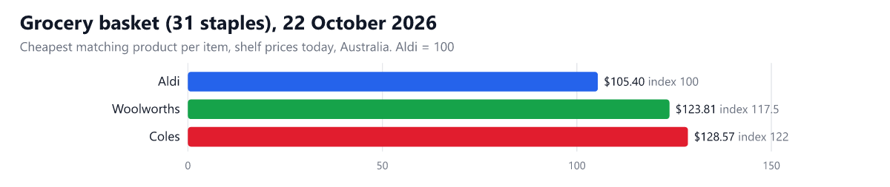
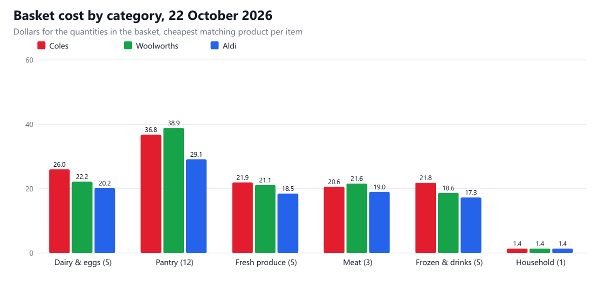

Data reports / Coles vs Woolworths vs Aldi price index
Coles vs Woolworths vs Aldi: weekly grocery price index (22 October 2026)
Disclosure: I built the Apify Actors used to collect this data. This post was written with AI assistance.
Aldi is the cheapest of the three for this week's basket of 31 staples ($105.40), Coles the dearest ($128.57, 22% more). With Aldi at 100, Coles is at 122 and Woolworths at 117.5. Between the two big chains, Coles is 3.8% dearer than Woolworths on this basket.
Supermarket price comparisons are usually one-off snapshots. This one is rebuilt every week from the shelf prices the three chains show online, for the same 31 items every time, so the trend is visible. Prices are for the cheapest matching product per item (usually a home brand), compared per kilogram or litre, so pack sizes do not distort the result.
This week's basket

| Coles | Woolworths | Aldi | |
|---|---|---|---|
| Basket total (31 items) | $128.57 | $123.81 | $105.40 |
| Index (Aldi = 100) | 122 | 117.5 | 100 |
| Basket at regular prices (without specials) | $129.86 | $135.20 | $105.40 |
| Items where the cheapest match is on special | 5 of 31 | 3 of 31 | 10 of 31 |
| Share of all matching products on special | 23.3% | 15.3% | 29.6% |
| Items where this chain has the lowest price (ties count for each) | 11 | 7 | 26 |
On special: Coles and Woolworths flag a product as on special when it has a discount or multi-buy deal. Aldi shows no "was" price, so its basket is the same with or without specials; Aldi products on its Lower Prices, Super Savers and Limited Time Only shelves are flagged as promotions here.

Week-over-week changes appear from the second edition on: this report stores every edition, and the next one will show which items moved.
The basket, item by item
Price per kilogram or litre of the cheapest matching product (an asterisk means that product is on special today). The basket buys the quantity shown.
| Item | Quantity | Coles | Woolworths | Aldi |
|---|---|---|---|---|
| Full cream milk | 2 L | $1.70 | $1.65 | $1.65* |
| Eggs, 12 pack | 0.7 kg | $8.50 | $7.50 | $7.10* |
| Butter | 0.25 kg | $18.00 | $16.80 | $14.00 |
| Tasty / cheddar cheese block | 0.5 kg | $9.30 | $10.50 | $8.99 |
| Natural yoghurt | 1 kg | $7.50 | $4.20 | $3.90 |
| White sandwich bread | 0.7 kg | $6.60 | $7.40 | $3.70 |
| Long grain white rice | 1 kg | $1.80 | $1.80 | $1.80 |
| Spaghetti | 0.5 kg | $1.90* | $1.80 | $1.80 |
| Plain flour | 1 kg | $1.20 | $1.20 | $1.20 |
| White sugar | 1 kg | $1.30 | $1.30 | $1.30 |
| Rolled oats | 1 kg | $2.30 | $2.10 | $2.00 |
| Corn flakes | 0.75 kg | $5.60 | $8.40 | $5.60 |
| Canned diced tomatoes | 0.8 kg | $2.38 | $2.38 | $2.98 |
| Baked beans | 0.84 kg | $3.10 | $3.80 | $3.10 |
| Canned tuna | 0.38 kg | $10.53 | $9.19 | $9.14 |
| Peanut butter | 0.375 kg | $13.10* | $13.30* | $6.00* |
| Extra virgin olive oil | 0.5 L | $14.00 | $13.00* | $8.80* |
| Frozen peas | 1 kg | $4.40 | $2.50 | $2.49 |
| Vanilla ice cream | 2 L | $3.00 | $3.00 | $2.50* |
| Royal Gala apples | 1 kg | $7.90 | $7.90 | $6.99 |
| Washed potatoes | 2 kg | $3.85 | $2.50 | $2.12 |
| Brown onions | 1 kg | $2.65 | $2.75 | $2.99 |
| Carrots | 1 kg | $1.73 | $2.50 | $2.09 |
| Tomatoes | 0.5 kg | $3.90* | $5.90 | $4.36 |
| Chicken breast fillets | 1 kg | $8.50* | $9.50 | $8.99* |
| Beef mince | 0.5 kg | $15.40* | $15.40 | $12.98* |
| Rindless bacon | 0.25 kg | $17.60 | $17.60* | $13.98* |
| Orange juice | 2 L | $2.75 | $2.10 | $2.00* |
| Frozen mixed vegetables | 1 kg | $2.80 | $2.80 | $2.79 |
| Frozen potato chips | 1 kg | $3.15 | $3.15 | $2.99* |
| Dishwashing liquid | 1 L | $1.40 | $1.40 | $1.40 |
How this was measured
- Source: the Coles, Woolworths and ALDI scrapers on Apify, run on 2026-10-22 with a fixed list of 31 search terms, the first 20 to 30 results per search at each chain.
- Like for like: a product counts for an item only if its name matches that item (for example "full cream" milk, not lactose-free, flavoured or A2) and it has a unit price. Only items with a match at all three chains enter the totals.
- Cheapest match: for each item the lowest unit price among the matching products is used. That favours home brands, which is what a price-conscious shopper buys.
- Online shelf prices: the prices are those each chain's website shows without choosing a store, in Australian dollars. Coles prices vary a little from store to store. Prices include any special that is active that day.
- Not an official index: this is a small, fixed basket of staples, not the whole shop, and not a substitute for ABS or ACCC figures. Aldi's range is narrower, which is why some items have fewer matches there.
- Aggregate prices only: product names and prices are shown; no personal data is involved.
How to get this data yourself, every day
Everything above was collected by these Apify Actors from a fixed input, plus some arithmetic. You can run the same collection on your own Apify account in a couple of clicks:
- Coles Australia Scraper: $1.00 per 1,000 results on the free plan, you pay only for results delivered.
- Woolworths Australia Scraper: $0.70 per 1,000 results on the free plan, you pay only for results delivered.
- Aldi Australia Scraper: $1.00 per 1,000 results on the free plan, you pay only for results delivered.
Collecting the data for this edition costs about $1.49 on Apify's free plan (you pay per result delivered, nothing for a search that returns nothing), so a weekly refresh is about $6 a month.
Daily monitor in three steps:
- Open the Actor, paste an input like the one below, and switch on Only new (
onlyNew). The first run returns everything; every later run returns only what no earlier run of the same watch list delivered, and skipped items are not charged. - Save the input as a task and put it on a schedule (for example the cron expression
0 7 * * *, every day at 07:00 UTC). - Send the result where you work: e-mail, Slack or Google Sheets, from the task's Integrations tab.
{
"searchTerms": [
"milk",
"eggs",
"bread"
],
"maxProductsPerInput": 50,
"onlyNew": true,
"monitorKey": "coles-staples"
}
The same fields work in the Woolworths scraper. With onlyNew on, a product whose price changed since the last run comes back again with the old and new price in changes, so the monitor doubles as a price-drop alert. The ALDI scraper has no only-new switch: schedule it and compare the runs.
Want your own basket, with your brands, your store and your postcode? Run the Coles, Woolworths or ALDI scraper on Apify: type the products you buy, press Start, and get prices, unit prices and specials as a spreadsheet. The input forms are prefilled.
Next edition: this report is rebuilt weekly with the same method, so changes between editions are real changes. Bookmark the latest edition or the reports hub, or run the monitor above if you would rather have new items delivered automatically.
All editions
- 22 October 2026 (latest)